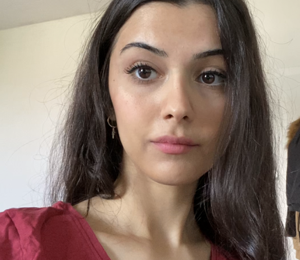
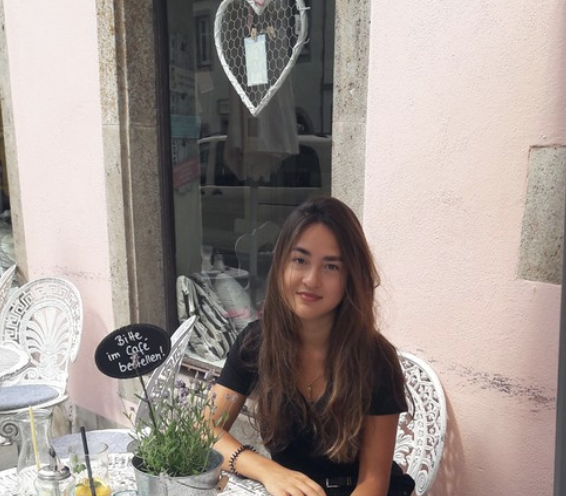
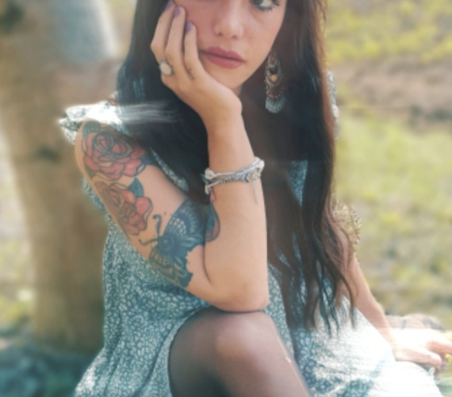

wurde fast mal von einem Skorpion gebissen
geht regelmäßig Wildkräuter sammeln
wird von Familie und Freunden nur "Nina" genannt
hatte früher mal eine Glatze
hat Hausverbot in einem REWE-Markt
besitzt ein Autogramm von Monty Python
hat mal in einer Schokofabrik gearbeitet
Fische sind seine absoluten Lieblingstiere
war 2017 für sechs Monate auf Weltreise
hört sich jeden Abend zum Einschlafen ein Märchen an
hat 11 Neffen und Nichten
hatte als Kind vier Molche als Haustiere
ihr Umzug nach BAY hat allein kulinarische Gründe
Lieblingszitat: "Chaos is a friend of mine"
  